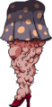
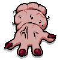

La jambe de Mom

La main de Mom

L'oeil de Mom

La chair de Mom
La jambe de Mom
La main de Mom
L'oeil de Mom
La chair de Mom
Isaac et sa mère vivent paisiblement dans leur maison jusqu'au jour où la pieuse mère d'Isaac entend une voix "venant du dessus".
Cette voix lui dit que son fils est corrompu par les péchés.
Une fois de plus la voix retentit, exigeant que le jeune Isaac soit écarté pour de bon, sa mère s'exécute et enferme Isaac dans sa chambre.
La voix se fait de nouveau entendre et requiert qu'elle lui offre le sacrifice de son fils comme preuve de sa foi.
Sa mère se saisit d'un couteau de boucher pour accomplir le souhait divin.
Isaac, qui a assisté à la scène, tente alors d'échapper à sa mère en rentrant dans la cave de la maison ...
Le combat contre Mom prend place dans la salle entière au 2e sous-sol.
Quatres portes émergeront sur les quatre côtés de la salle, et Mom peut attaquer depuis ces endroits.
Elle peut aussi écraser Isaac, qui est montré par une ombre devenant plus grande sur le sol.
Mom inflige toujours un cœur de dégât. Elle peut être seulement être blessée en la frappant directement lorsqu'elle montre son pied, son œil, sa peau ou sa main.
Enfin en sortant un morceau de chair d'une porte elle fait aussi apparaître différents types de monstres.
Les items font partie intégrante du gameplay de The Binding of Isaac et vont permettre à Isaac de se défendre des monstres qu'il rencontre aux sous-sols.
Ils modifient les attributs d'Isaac, s'accordent entre eux, modifient ses larmes, et bien plus encore.
Les articles sont classés en plusieurs types et groupes distincts. Certains objets sont passifs, ce qui ajoute un effet permanent à Isaac, tandis que d'autres ne s'activent que lorsqu'ils sont utilisés.
Il y a un total de 719 items .